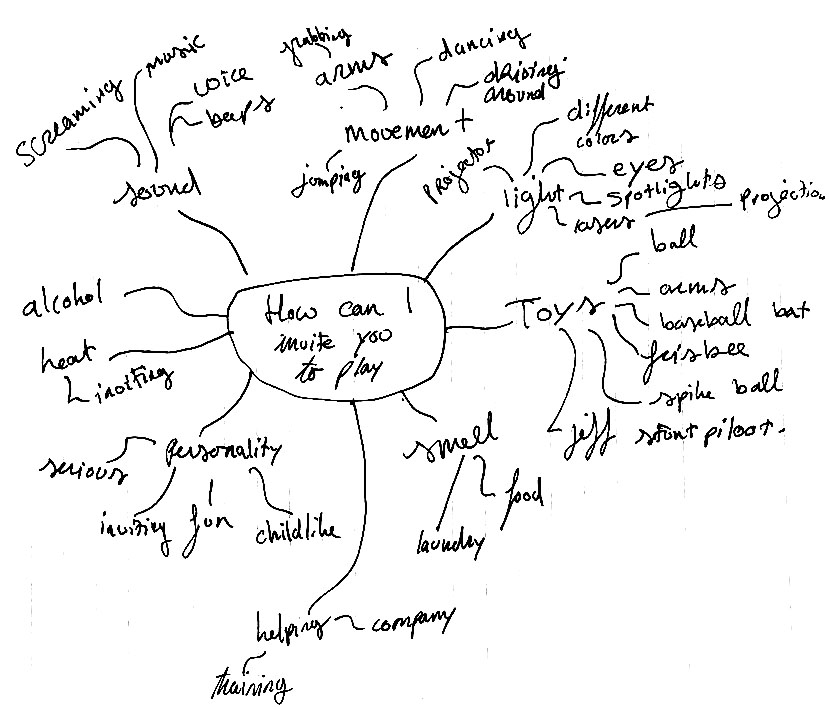
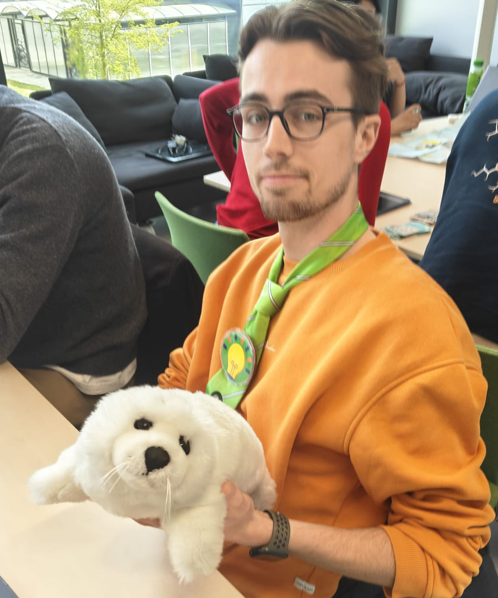
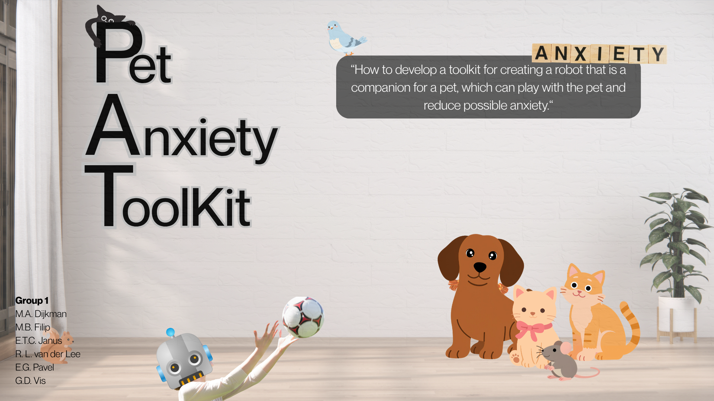

Case description, design tools, and functional breakdown for modular robotic companion.
Domestic pets (e.g., cats & dogs) often experience stress and separation anxiety when left alone. While interactive toys exist, the effectiveness of these solutions varies per individual animal; a motion that is engaging for one might be terrifying for another. This makes designing an effective robot companion challenging.
To solve this design gap, this project tries to focus on developing a modular pet companion toolkit. Rather than a single, static robot, we design a hardware and software setup that allows designers and pet owners to rapidly prototype, test and change according to the preferences of each individual pet. Swapping physical modules, like a treat dispenser, a laser pointer, or a mechanical arm to throw balls, facilitates iterative testing. The goal is to discover the best combination of play and mechanics to effectively reduce pet anxiety.
Research Question: How can a modular robotic design toolkit enable designers and pet owners to rapidly prototype interactions to help alleviate anxiety behaviours for domestic pets?
The Method: Testing a product's behaviour by simulating it manually.
Application to problem: Before actually making the toolkit and having to decide on speed and the best module applications, construct a low-fidelity version of our robot, attach the modules, and try it out. This allows for quick iteration and is easy to edit.
What we might learn: This part of the design process can help us identify which modules are exciting for the animals and are perceived as play, while other modules could be used to reduce anxiety or loneliness. Certain jerky movements, smells, or shapes can scare the animals. This design method can help find the sweet spot in interactions and engagement, defining the parameters and specifications of the final hardware and software. It also reduces the research time needed and lowers costs. Play methods are translated into actual mechanical design.
The Method: An intensive, timed collaborative event where multidisciplinary research teams rapidly ideate and prototype solutions to our challenge.
Application to problem: Organise a short, one-day event focused on designing a product for animal anxiety reduction and entertainment. Invite peers at the University of Twente, such as design experts and other animal enthusiasts who want to participate, and provide them with all the tools and sensors they need to create a toolkit, challenging them to prototype a module that helps animals feel safe or relaxed.
What we might learn: By observing how other designers and experts tackle this issue and build solutions, we can identify the obvious physical and technical pitfalls in designing for pets, such as issues with durability, scale, and movement. It may also generate a wide range of ideas for our modules that we might not have considered on our own. Furthermore, it allows us to test the toolkit itself and see how intuitive it is and what is missing.
The Method: A qualitative and quantitative research approach that groups subjects based on shared characteristics to identify patterns.
Application to problem: Engage with and research subsets of pet owners through online forums, networks, or surveys who actively deal with issues like separation anxiety. Segment these cohorts based on variables such as pet background and context (e.g., rescue or raised from birth) or the type of anxiety the animal shows, and analyse how owners currently cope with this issue.
What we might learn: This method helps support our assumptions with data and real experiences from owners. We can learn exactly how owners currently support their anxious pets and what triggers their distress. Mapping observed behaviours to specific interventions we can deploy helps determine the foundations of our modules.

Mind map of the problem space, exploring how we can design for pet interaction.
To help actualise and map the encounter between the animal and the robot/technology, we will conduct a live play session using a domestic cat (played by Maurits) and a robot (played by Gijs). The team members will use a physical proxy (e.g., a cardboard cutout of a robot and a cat onesie) to intentionally restrict movement or speed, creating a more accurate representation of the interaction by simulating behaviour closer to the physical limitations. The rest of the team will support this play session using live music, camerawork for later research, and a live audience.
Figure 1 is an example of how our actor would portray a seal.

Figure 1: Seal (left), Maurits (right), showing his best acting skills as a physical proxy for the seal (award-winning).
